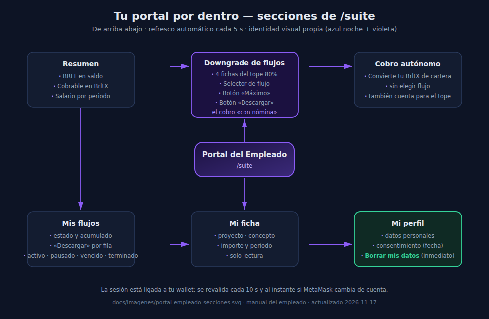
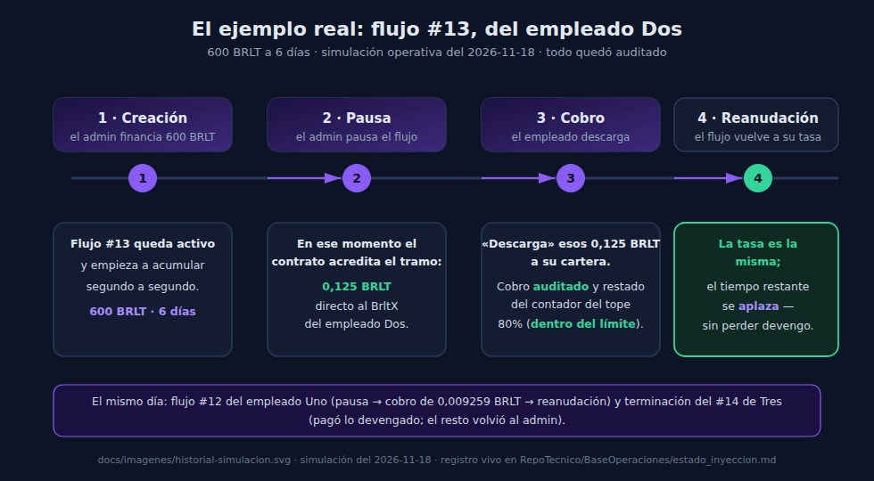

07-Manual-del-Admin/manual-empleado.md
⟦§1⟧Manual del Empleado (guía del Portal /suite)
Empezar en 5 minutos
De cero a ver tu nómina
- Abre la web y ve a
/entrar(la puerta única). - Pulsa conectar wallet (MetaMask). Si te pide elegir cuenta y red, acepta.
- La app pregunta al servidor qué eres. Si tienes ficha de empleado, te lleva a
tu Portal del Empleado (
/suite); verás una pantalla oscura con cabecera violeta (es normal, tu portal tiene su propia identidad). - Antes de firmar verás una ficha clara con lo que haces y la nota «La firma es gratuita: no mueve fondos ni autoriza gastos». Firmas con tu wallet para abrir la sesión (no gasta dinero).
- Ya dentro, mira el Resumen: BRLT en saldo, Cobrable en BrltX y tu salario por periodo.
- Para cobrar: baja a «Downgrade de flujos», elige un flujo, escribe el importe (o pulsa «Máximo») y pulsa «Descargar». Firma en MetaMask y los BRLT llegan a tu wallet.
¿Sin alta? La app te dirá «pide alta al administrador»: pídesela y vuelve a
/entrar.

Tu portal por dentro
Secciones (de arriba abajo)
| Sección | Qué encuentras |
|---|---|
| Resumen | BRLT que ya tienes en la wallet, BrltX cobrable con devengo y tu salario por periodo. |
| Downgrade de flujos | El cobro «con nómina»: eliges el flujo y respetas el tope del 80%. |
| Cobro autónomo | El cobro libre de siempre: conviertes BrltX de tu cartera sin elegir flujo. |
| Mis flujos | Tabla de tus “grifos”: estado, acumulado y botón «Descargar» por fila. |
| Mi ficha | Tu ficha laboral (proyecto, concepto, importe y periodo). |
| Mi perfil | Datos personales, consentimiento y borrado de datos. |
La pantalla se refresca sola cada 5 segundos. La cara visual es propia: fondo azul noche, tarjetas oscuras y cabecera violeta — nada que ver con el panel del admin.

Entrar y tu wallet (importante)
La app comprueba que sigues siendo tú
- Tu sesión está ligada a tu wallet. Mientras navegas por
/suite, la app la compara con la cuenta activa de MetaMask: al vuelo (si cambias de cuenta) y además cada 10 segundos. - Si cambias de cuenta en MetaMask, aparece el aviso «Wallet distinta a tu
sesión» con un botón para revalidar en
/entrar. Hasta que no revalides no podrás seguir operando. Es una protección: nadie puede usar tu sesión abierta con otra cuenta. - Si abres
/suitecon una sesión de admin, te manda directamente a/admin. Y si no tienes sesión, vuelves a/entrar. - Antes de cualquier firma, la app vuelve a comparar la cuenta conectada con la de tu sesión: si no coinciden, se cancela el envío.
La firma clara: lo que verás antes de firmar
Primero se te explica, después se firma
Desde el 2026-11-18, todas las firmas llegan explicadas. En tu entrada al portal (y en cualquier firma de sesión o permiso) verás dos cosas:
- En la pantalla, una ficha de firma: el título de la operación, qué haces, con qué wallet y la nota por defecto «La firma es gratuita: no mueve fondos ni autoriza gastos».
- En la wallet, un mensaje personalizado que dice para qué es la firma. En tu caso reza: «Acceder a tu Portal del Empleado de Superfluid Brlt. Esta firma solo prueba que esta wallet es tuya. No mueve fondos ni autoriza gastos». Caduca a los 5 minutos.
En las operaciones que sí tocan dinero (crear flujos, cobrar, pausar…) la
pantalla te dice el impacto real antes de firmar: «Quemas X BrltX y recibes X
BRLT», «Descargas X BRLT del flujo #N. Tope del 80%: disponible Y BRLT». Nada se
firma a ciegas: la app ni siquiera usa el tipo de firma ciego (eth_sign) que
las wallets marcan como peligroso.

La plataforma hoy (tras la simulación del 2026-11-18)
Quiénes están dados de alta
La base de datos se reinició y se volvió a llenar con uso real simulado. Hoy hay 5 empleados activos en 2 proyectos:
| Empleado | Contrato (ficha) | Flujo |
|---|---|---|
| Uno | Nómina ANLU: 100 BRLT / 30 días | #12 activo (300 BRLT) |
| Dos | Nómina ANLU: 100 BRLT / 30 días | #13 activo (600 BRLT) |
| Tres | Nómina ANLU: 100 BRLT / 30 días | #14 terminado |
| Cuatro | Mantenimiento: 50 BRLT / 15 días | #15 activo (360 BRLT) |
| Cinco | Proyecto MVP: 80 BRLT / 6 días | (sin flujo propio aún) |
Los dos proyectos: Nomina ANLU y Mantenimiento Infraestructura.
Downgrade de flujos (el cobro con tope del 80%)
¿Qué significa el tope?
Regla de la casa: en total solo puedes convertir en BRLT el 80% de todo lo que te asignaron (la suma de todos tus flujos, vivos o terminados). Lo ya convertido se va restando. Es una regla de la aplicación, no del contrato, y aplica igual al «Cobro autónomo»: los dos comparten el mismo contador.
Las 4 fichas que verás
| Ficha | Significado |
|---|---|
| Asignado a tu cuenta | Todo lo depositado en tus flujos. |
| Tope 80% | Lo máximo que podrás convertir en total (80% de lo asignado). |
| Ya descargado | Lo que ya has convertido en BRLT hasta hoy. |
| Disponible | Tope − ya descargado. Es tu margen actual. |
Ejemplo: asignado 10.000 → tope 8.000 → ya descargado 1.500 → disponible 6.500. Si ya hubieras descargado 8.000, el tope está agotado y no podrás descargar más por esta vía.
El ejemplo real (flujo #13, de la simulación del 2026-11-18)
Así funcionó de verdad el ciclo completo con el flujo #13 del empleado Dos (600 BRLT a 6 días):
- Creación: el admin financia 600 BRLT a 6 días → el flujo #13 queda activo y empieza a acumular segundo a segundo.
- Pausa: el admin pausa el flujo. En ese momento el contrato acredita el devengo del tramo — 0,125 BRLT — directamente al BrltX del empleado.
- Cobro (downgrade): el empleado Dos descarga esos 0,125 BRLT a su cartera. El cobro queda auditado y el contador del tope 80% lo resta (estaba holgado: dentro del límite sin problema).
- Reanudación: el admin reanuda el flujo con la misma tasa; el tiempo restante se aplaza, así que el empleado no pierde devengo.
El mismo día se hizo lo propio con el flujo #12 del empleado Uno (pausa → cobro de 0,009259 BRLT → reanudación) y se terminó el #14 del empleado Tres (pagó lo devengado y el resto volvió al admin).

Cómo descargar, paso a paso
- Elige el flujo en el selector (puedes elegir cualquiera de los tuyos, activos, pausados o terminados).
- Escribe el importe, o pulsa el botón «Máximo»: te propone lo menor entre tu BrltX en cartera y lo disponible del tope. Ese es el tope real de hoy.
- Pulsa «Descargar». MetaMask te pedirá la firma; antes la pantalla te avisa del impacto real (quema tu BrltX y te paga BRLT). No gasta nada más: convierte tu BrltX en BRLT.
- En segundos verás «Ya descargado» subir lo mismo que baja tu BrltX y sube tu BRLT en saldo.
Truco: en la tabla de «Mis flujos» cada fila tiene su botón «Descargar»: te preselecciona ese flujo y te lleva directo al panel.
¿Por qué «Máximo» me da menos de lo que espero?
Dos razones posibles, y el botón ya te calcula el mínimo:
- El tope: no puedes pasar del 80% acumulado.
- La cadena: el devengo pendiente de un flujo activo solo se convierte en BrltX cobrable cuando el flujo se liquida on-chain (y liquidar exige que haya vencido). Hasta entonces, ese devengo no está en tu cartera.
- Si «Máximo» te da 0, o el tope está agotado o tu BrltX en cartera es 0.

Cobro autónomo (el cobro libre, que se conserva)
Sin elegir flujo
- Escribe el importe de BrltX de tu cartera que quieres convertir (o pulsa «Todo» si el panel lo ofrece).
- Pulsa el botón de cobro: MetaMask firma y recibes BRLT real en tu wallet.
- Recuerda: también cuenta para el tope del 80%. Si lo intentas con un importe mayor al disponible, verás el aviso «tope_80_superado» y no se registra nada.
Bueno saber: puedes cobrar aunque el contrato esté “en pausa” y aunque tu ficha esté dada de baja (ventana de retiro de 90 días).
Mis flujos
Estados y qué significan
| Estado | Qué pasa | Qué hago |
|---|---|---|
| activo | El grifo corre | nada, o descargar cuando quieras |
| pausado | El devengo está congelado | espera; el tiempo se aplaza |
| vencido | Terminó su plazo | espera la liquidación on-chain (o pídela al admin); lo acumulado pasa a cobrable |
| terminado | Todo liquidado | puedes cobrar lo restante |
Cada fila muestra el estado, el acumulado y su botón «Descargar». La tabla se refresca cada 5 segundos: si te crean un flujo nuevo, aparece al momento.
Mi ficha y mi perfil
Mi ficha
Tu información laboral: proyecto, concepto, importe y periodo. Solo lectura.
Mi perfil (tú decides)
- Guardar perfil: tu email/teléfono.
- Dar/Retirar consentimiento: siempre visible con fecha.
- Borrar mis datos: efecto inmediato (email/teléfono fuera); a los 30 días se anonimiza el nombre; tu wallet queda para retirar hasta 90 días tras la baja.
Preguntas frecuentes
¿Y si no veo ningún flujo?
Aún no te crearon el “grifo”: pídeselo al administrador. Cuando lo haga, aparecerá aquí al momento (la pantalla se refresca cada 5 segundos).
¿Y si la app está caída?
Los flujos viven en la cadena: tu BrltX y tus pagos no desaparecen. Cuando la app vuelva, todo se acumula como si nada.
¿Y si cambio de cuenta en MetaMask?
Verás el aviso «Wallet distinta a tu sesión». Vuelve a entrar con tu cuenta de
siempre en /entrar y seguirás donde estabas.
¿Y si el tope está agotado?
Ya convierte del 80% de todo lo asignado. Si te queda BrltX pendiente de liquidar, tendrás que esperar a que el flujo se liquide on-chain — pero recuerda que el tope global no se reabre con lo nuevo: es acumulado de por cuenta.
Nota de pantallazos: las capturas de la Suite se regenerarán tras el rediseño (
npm run capturas); la descripción de este manual refleja el portal vigente de 2026-11-18 (firma clara incluida).